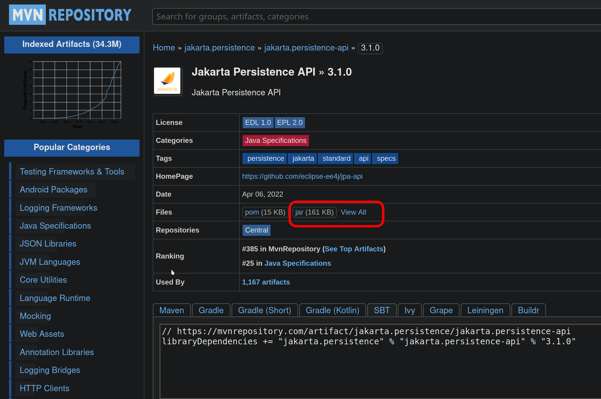

This document describes the debugging process of this popular ORM framework. Here you will find comments about the main loop and how to get the application in debugging mode.
Nowadays (2020's) any important application, utilty, tool or framework seems to be built with the help of Apache Maven or new developments with Gradle. But, how can you build the software on your own? How hard it is? Today (somewhere in June 2023) I was reading the Hibernate getting started guide, and I found that they did not use the framework from scratch, instead they provide a working example bundled with Maven and JUnit.
The main purpose of this article is to show how hard it is to compile and run a mature software application without using Maven and by extension, any kind of building tool. Also, it will serve as walkthrough for whose whom only used the javac and java command to compile single-file and minimal applications.
For me, always have been important to write and compile the code from scratch in order to gain a good understanding on what the software does. In this situation I will try to compile the examples entirely by hand without using Maven. Let's see how hard it is.
The java code to be run is the getting started examples provided in the bundled distribution of maven. The getting started document points you to a zip containing the tutorials. This tutorials are being packaged with Maven and have JUnit (unit test framework), slf4j (logging framework), H2 (in memory database) and Hibernate as dependencies.
The first thing is to download the dependencies defined in pom.xml. I will download those software from Maven Central but you can download it from anywhere else.
These are the required versions defined there:
* org.hibernate hibernate-core:6.0.0.CR2
* org.slf4j slf4j-simple:1.7.5
* junit junit:4.13.2
* com.h2database h2:1.4.197
Before to run the clases, some modifications where made:
- The two clases on Basic folder, where placed in the default package.
- A main() method was added to the test class.
java
public static void main(String[] args) {
NativeApiIllustrationTest app = new NativeApiIllustrationTest();
app.setUp();
app.testBasicUsage();
app.tearDown();
}
- Any reference to JUnit was removed, now the test class does not extends from junit.framework.TestCase.
- The @Overrides were removed.
Then, issue the following command to your terminal emulator; Note that we also add the source directory src to the classpath:
javac -cp src:lib/hibernate-core-6.0.0.CR2.jar: src/NativeApiIllustrationTest.java
IMPORTANT. Note that for compiling only it is needed to link those packages that are being used in the source code.
This will return several error messages, the first one is listed below:
NativeApiIllustrationTest.java:73: error: cannot access EntityManagerFactory
sessionFactory.close();
^
class file for jakarta.persistence.EntityManagerFactory not found
From that message it is easy to guess that jakarta.persistence.EntityManagerFactory class is not defined. Looking for that package on the web on maven central I found that hibernate-core:6.0.0.CR2 package has the jakarta.persistence-api as dependency:
<dependency>
<groupId>jakarta.persistence</groupId>
<artifactId>jakarta.persistence-api</artifactId>
<version>3.1.0</version>
<scope>compile</scope>
<exclusions>
<exclusion>
<artifactId>xml-apis</artifactId>
<groupId>xml-apis</groupId>
</exclusion>
</exclusions>
</dependency>
I download the dependency as we did previously from here: 
Now, run the following command, that now contains the missing sources:
javac -d target -cp src:lib/hibernate-core-6.0.0.CR2.jar:lib/jakarta.persistence-api-3.1.0.jar src/NativeApiIllustrationTest.java
These are the logs:
Note: src/NativeApiIllustrationTest.java uses or overrides a deprecated API.
Note: Recompile with -Xlint:deprecation for details.
Since our classes belongs to the default package (they do not have declare any package on the begining on the source file) we have to enter to the target folder in order to run this classes. Now, run the application.
cd target
java NativeApiIllustrationTest
That try will end in the following error:
Error: Unable to initialize main class NativeApiIllustrationTest
Caused by: java.lang.NoClassDefFoundError: org/hibernate/service/ServiceRegistry
When you search for this class you find that belongs to the hibernate-core package. After realizing that maybe the dependencies that you used to compile are being used at run time, this is the command:
java -cp .:../lib/hibernate-core-6.0.0.CR2.jar:../lib/jakarta.persistence-api-3.1.0.jar NativeApiIllustrationTest
That command throws this exception:
Exception in thread "main" java.lang.NoClassDefFoundError: org/jboss/logging/Logger
at org.hibernate.boot.registry.selector.internal.StrategySelectorBuilder.<clinit>(StrategySelectorBuilder.java:49)
at org.hibernate.boot.registry.BootstrapServiceRegistryBuilder.<init>(BootstrapServiceRegistryBuilder.java:50)
at org.hibernate.boot.registry.StandardServiceRegistryBuilder.<init>(StandardServiceRegistryBuilder.java:96)
at NativeApiIllustrationTest.setUp(NativeApiIllustrationTest.java:52)
at NativeApiIllustrationTest.main(NativeApiIllustrationTest.java:45)
Caused by: java.lang.ClassNotFoundException: org.jboss.logging.Logger
at java.base/jdk.internal.loader.BuiltinClassLoader.loadClass(BuiltinClassLoader.java:581)
at java.base/jdk.internal.loader.ClassLoaders$AppClassLoader.loadClass(ClassLoaders.java:178)
at java.base/java.lang.ClassLoader.loadClass(ClassLoader.java:522)
... 5 more
After adding the previously downloaded slf4j package to the classpath it throws the same exception. When you look at the log you see that the Logger missing class, belongs to the org.jboss.logging package. After downloading the missing package from mavencentral with this command:
.:../lib/hibernate-core-6.0.0.CR2.jar:../lib/jakarta.persistence-api-3.1.0.jar:../lib/jboss-logging-3.4.3.Final.jar NativeApiIllustrationTest
you get another missing class exception:
Exception in thread "main" java.lang.NoClassDefFoundError: jakarta/transaction/SystemException
at java.base/java.lang.Class.forName0(Native Method)
at java.base/java.lang.Class.forName(Class.java:398)
at org.jboss.logging.Logger.doGetMessageLogger(Logger.java:2562)
at org.jboss.logging.Logger.getMessageLogger(Logger.java:2530)
at org.jboss.logging.Logger.getMessageLogger(Logger.java:2516)
at org.hibernate.internal.CoreLogging.messageLogger(CoreLogging.java:32)
at org.hibernate.internal.CoreLogging.messageLogger(CoreLogging.java:28)
at org.hibernate.boot.registry.classloading.internal.ClassLoaderServiceImpl.<clinit>(ClassLoaderServiceImpl.java:40)
at org.hibernate.boot.registry.BootstrapServiceRegistryBuilder.build(BootstrapServiceRegistryBuilder.java:185)
at org.hibernate.boot.registry.StandardServiceRegistryBuilder.<init>(StandardServiceRegistryBuilder.java:96)
at NativeApiIllustrationTest.setUp(NativeApiIllustrationTest.java:52)
at NativeApiIllustrationTest.main(NativeApiIllustrationTest.java:45)
Caused by: java.lang.ClassNotFoundException: jakarta.transaction.SystemException
at java.base/jdk.internal.loader.BuiltinClassLoader.loadClass(BuiltinClassLoader.java:581)
at java.base/jdk.internal.loader.ClassLoaders$AppClassLoader.loadClass(ClassLoaders.java:178)
at java.base/java.lang.ClassLoader.loadClass(ClassLoader.java:522)
... 12 more
As you can see here the process begins to be cumbersome. In order to see how many dependencies are remaining, I returned to the original source tutorials and get the dependencies tree $ mvn dependency:tree_
[INFO] --- dependency:3.6.0:tree (default-cli) @ hibernate-tutorial-hbm ---
[WARNING] The artifact org.hibernate:hibernate-core:jar:6.0.0.CR2 has been relocated to org.hibernate.orm:hibernate-core:jar:6.0.0.CR2
[INFO] org.hibernate.tutorials:hibernate-tutorial-hbm:jar:6.0.0.CR2
[INFO] +- org.hibernate.orm:hibernate-core:jar:6.0.0.CR2:compile
[INFO] | +- jakarta.persistence:jakarta.persistence-api:jar:3.0.0:compile
[INFO] | +- jakarta.transaction:jakarta.transaction-api:jar:2.0.0:compile
[INFO] | +- org.jboss.logging:jboss-logging:jar:3.4.3.Final:runtime
[INFO] | +- org.jboss:jandex:jar:2.4.2.Final:runtime
[INFO] | +- com.fasterxml:classmate:jar:1.5.1:runtime
[INFO] | +- org.hibernate.common:hibernate-commons-annotations:jar:6.0.0.CR1:runtime
[INFO] | +- net.bytebuddy:byte-buddy:jar:1.12.7:runtime
[INFO] | +- jakarta.activation:jakarta.activation-api:jar:2.0.1:runtime
[INFO] | +- jakarta.xml.bind:jakarta.xml.bind-api:jar:3.0.1:runtime
[INFO] | | \- com.sun.activation:jakarta.activation:jar:2.0.1:runtime
[INFO] | +- org.glassfish.jaxb:jaxb-runtime:jar:3.0.2:runtime
[INFO] | | \- org.glassfish.jaxb:jaxb-core:jar:3.0.2:runtime
[INFO] | | +- org.glassfish.jaxb:txw2:jar:3.0.2:runtime
[INFO] | | \- com.sun.istack:istack-commons-runtime:jar:4.0.1:runtime
[INFO] | +- jakarta.inject:jakarta.inject-api:jar:2.0.0:runtime
[INFO] | \- org.antlr:antlr4-runtime:jar:4.9.1:runtime
[INFO] +- org.slf4j:slf4j-simple:jar:1.7.5:compile
[INFO] | \- org.slf4j:slf4j-api:jar:1.7.5:compile
[INFO] +- junit:junit:jar:4.13.2:compile
[INFO] | \- org.hamcrest:hamcrest-core:jar:1.3:compile
[INFO] \- com.h2database:h2:jar:1.4.197:compile
After looking our previous exception it is seen that the missing package is jakarta.transaction-api. From here it is easy to guess that all of this dependencies should appear in the class path.
The next thing I will to try to do is to run the maven project and read the documentation about the compiler plugin. As the documentation states, Maven is a plugin execution framework so it is a good idea to review how the compile plugin works. Understanding how Maven compiles your code, could you help to understand more clearly how Gradle works.
compile works: javac commandBefore to understand this, you need to know that Maven process software sets by means of lifecycles. Basically, one lifecycle are all the steps you repetively do when you want to release a software application e.g. clean (filter .gitignore), generate code (DTO classes generation), run tests, produce code insights, compile and finally package.
The base project provided with Hibernate has the following folder structure. Note that the only available code is located in the test folder. Recalling the introduction, this was one of the main reasons of this research, because I think that if you want to run a piece of code, it is better if it runs without bloatware, in this case the Junit Java testing framework. Our aim the in the following is to run this minimal example directly, without relying on Maven or the unit testing framework JUnit.
├── basic
│ ├── pom.xml
│ ├── src
│ │ └── test
│ │ ├── java
│ │ │ └── org
│ │ │ └── hibernate
│ │ │ └── tutorial
│ │ │ └── hbm
│ │ │ ├── Event.hbm.xml
│ │ │ ├── Event.java
│ │ │ └── NativeApiIllustrationTest.java
│ │ └── resources
│ │ └── hibernate.cfg.xml
Maven performs two separation compilations, one for main application source at src/main and other for testing sources at src/test. The former is executed at the compiler:compile goal and the later at compiler:testCompile goal both from the compile build phase.
After compiling the test source with debugging options with mvn test-compile -X you find that command that is being used to compile the test is the following
-d /opt/hibernate-release-6.0.0.CR2/hibernate-tutorials.zip-6.0.0.CR2/basic/target/test-classes -classpath /opt/hibernate-release-6.0.0.CR2/hibernate-tutorials.zip-6.0.0.CR2/basic/target/test-classes:/opt/hibernate-release-6.0.0.CR2/hibernate-tutorials.zip-6.0.0.CR2/basic/target/classes:/home/jcammmmm/.m2/repository/org/hibernate/orm/hibernate-core/6.0.0.CR2/hibernate-core-6.0.0.CR2.jar:/home/jcammmmm/.m2/repository/jakarta/persistence/jakarta.persistence-api/3.0.0/jakarta.persistence-api-3.0.0.jar:/home/jcammmmm/.m2/repository/jakarta/transaction/jakarta.transaction-api/2.0.0/jakarta.transaction-api-2.0.0.jar:/home/jcammmmm/.m2/repository/org/jboss/logging/jboss-logging/3.4.3.Final/jboss-logging-3.4.3.Final.jar:/home/jcammmmm/.m2/repository/org/jboss/jandex/2.4.2.Final/jandex-2.4.2.Final.jar:/home/jcammmmm/.m2/repository/com/fasterxml/classmate/1.5.1/classmate-1.5.1.jar:/home/jcammmmm/.m2/repository/org/hibernate/common/hibernate-commons-annotations/6.0.0.CR1/hibernate-commons-annotations-6.0.0.CR1.jar:/home/jcammmmm/.m2/repository/net/bytebuddy/byte-buddy/1.12.7/byte-buddy-1.12.7.jar:/home/jcammmmm/.m2/repository/jakarta/activation/jakarta.activation-api/2.0.1/jakarta.activation-api-2.0.1.jar:/home/jcammmmm/.m2/repository/jakarta/xml/bind/jakarta.xml.bind-api/3.0.1/jakarta.xml.bind-api-3.0.1.jar:/home/jcammmmm/.m2/repository/com/sun/activation/jakarta.activation/2.0.1/jakarta.activation-2.0.1.jar:/home/jcammmmm/.m2/repository/org/glassfish/jaxb/jaxb-runtime/3.0.2/jaxb-runtime-3.0.2.jar:/home/jcammmmm/.m2/repository/org/glassfish/jaxb/jaxb-core/3.0.2/jaxb-core-3.0.2.jar:/home/jcammmmm/.m2/repository/org/glassfish/jaxb/txw2/3.0.2/txw2-3.0.2.jar:/home/jcammmmm/.m2/repository/com/sun/istack/istack-commons-runtime/4.0.1/istack-commons-runtime-4.0.1.jar:/home/jcammmmm/.m2/repository/jakarta/inject/jakarta.inject-api/2.0.0/jakarta.inject-api-2.0.0.jar:/home/jcammmmm/.m2/repository/org/antlr/antlr4-runtime/4.9.1/antlr4-runtime-4.9.1.jar:/home/jcammmmm/.m2/repository/org/slf4j/slf4j-simple/1.7.5/slf4j-simple-1.7.5.jar:/home/jcammmmm/.m2/repository/org/slf4j/slf4j-api/1.7.5/slf4j-api-1.7.5.jar:/home/jcammmmm/.m2/repository/junit/junit/4.13.2/junit-4.13.2.jar:/home/jcammmmm/.m2/repository/org/hamcrest/hamcrest-core/1.3/hamcrest-core-1.3.jar:/home/jcammmmm/.m2/repository/com/h2database/h2/1.4.197/h2-1.4.197.jar: -sourcepath /opt/hibernate-release-6.0.0.CR2/hibernate-tutorials.zip-6.0.0.CR2/basic/src/test/java:/opt/hibernate-release-6.0.0.CR2/hibernate-tutorials.zip-6.0.0.CR2/basic/target/generated-test-sources/test-annotations: -s /opt/hibernate-release-6.0.0.CR2/hibernate-tutorials.zip-6.0.0.CR2/basic/target/generated-test-sources/test-annotations -g -verbose -target 1.8 -source 1.8
The previously listed command has the following structure:
-d output/directory
-classpath jar1/location:jar2/location:other/jar
-g
-verbose
-target 1.8
-source 1.8
Having the commands employed by the Maven compiler, I can proceed with my own manual compilation. In order modify and test the commands quickly I used argument files. These are the argument files:
samplespkg/Event.java
samplespkg/NativeApiIllustrationTest.java
-d target
-g
-classpath .:./lib/hibernate-core-6.0.0.CR2.jar:h2-1.4.197.jar:./lib/jakarta.persistence-api-3.1.0.jar
-sourcepath .
This commands are called as follows, and basically is the concatenation of the javac with each of the argument file contents.
javac @opt.args @cls.args
If you do not read the docs with calm, this could help:
- It seems that there is no difference between compiling the code with the full classpath or with only the minimal dependencies; javac @opt.argc.bk @cls.argc and javac @opt.argc @cls.argc produce the same compilation results.
- You only need the minimal dependencies (the jars that contains the definitions of declared objects in your sources) when you are compiling the code, but you need the entire dependency tree for running.
- The classname includes the package name e.g. samplespkg.NativeApiIllustrationTest
- If only the main class (the class that contains the main method) is supplied, dependent classes are compiled too without to put them explicitly in the cls.arg file.
java commandBy following the debug results from the mvn test-compile -X command, the following argument file was created:
-classpath .:/home/jcammmmm/.m2/repository/org/hibernate/orm/hibernate-core/6.0.0.CR2/hibernate-core-6.0.0.CR2.jar:/home/jcammmmm/.m2/repository/jakarta/persistence/jakarta.persistence-api/3.0.0/jakarta.persistence-api-3.0.0.jar:/home/jcammmmm/.m2/repository/jakarta/transaction/jakarta.transaction-api/2.0.0/jakarta.transaction-api-2.0.0.jar:/home/jcammmmm/.m2/repository/org/jboss/logging/jboss-logging/3.4.3.Final/jboss-logging-3.4.3.Final.jar:/home/jcammmmm/.m2/repository/org/jboss/jandex/2.4.2.Final/jandex-2.4.2.Final.jar:/home/jcammmmm/.m2/repository/com/fasterxml/classmate/1.5.1/classmate-1.5.1.jar:/home/jcammmmm/.m2/repository/org/hibernate/common/hibernate-commons-annotations/6.0.0.CR1/hibernate-commons-annotations-6.0.0.CR1.jar:/home/jcammmmm/.m2/repository/net/bytebuddy/byte-buddy/1.12.7/byte-buddy-1.12.7.jar:/home/jcammmmm/.m2/repository/jakarta/activation/jakarta.activation-api/2.0.1/jakarta.activation-api-2.0.1.jar:/home/jcammmmm/.m2/repository/jakarta/xml/bind/jakarta.xml.bind-api/3.0.1/jakarta.xml.bind-api-3.0.1.jar:/home/jcammmmm/.m2/repository/com/sun/activation/jakarta.activation/2.0.1/jakarta.activation-2.0.1.jar:/home/jcammmmm/.m2/repository/org/glassfish/jaxb/jaxb-runtime/3.0.2/jaxb-runtime-3.0.2.jar:/home/jcammmmm/.m2/repository/org/glassfish/jaxb/jaxb-core/3.0.2/jaxb-core-3.0.2.jar:/home/jcammmmm/.m2/repository/org/glassfish/jaxb/txw2/3.0.2/txw2-3.0.2.jar:/home/jcammmmm/.m2/repository/com/sun/istack/istack-commons-runtime/4.0.1/istack-commons-runtime-4.0.1.jar:/home/jcammmmm/.m2/repository/jakarta/inject/jakarta.inject-api/2.0.0/jakarta.inject-api-2.0.0.jar:/home/jcammmmm/.m2/repository/org/antlr/antlr4-runtime/4.9.1/antlr4-runtime-4.9.1.jar:/home/jcammmmm/.m2/repository/org/slf4j/slf4j-simple/1.7.5/slf4j-simple-1.7.5.jar:/home/jcammmmm/.m2/repository/org/slf4j/slf4j-api/1.7.5/slf4j-api-1.7.5.jar:/home/jcammmmm/.m2/repository/junit/junit/4.13.2/junit-4.13.2.jar:/home/jcammmmm/.m2/repository/org/hamcrest/hamcrest-core/1.3/hamcrest-core-1.3.jar:/home/jcammmmm/.m2/repository/com/h2database/h2/1.4.197/h2-1.4.197.jar
NativeApiIllustrationTest
Since our classes are located withing the default package (no package declaration in each source file), we must to place our terminal inside the target folder, otherwise any path provided in the commandline after the java program will be interpreted as a package structure.
java @../opt.arg
target, is expected that the classes are packaged i.e. the path you provide to run the classes java target\ClassName is interpreted as a package name and should match the package declarations on each source file e.g. package target;. java command, classpath should be declared first before the main class.If you try to run by hand (i.e. without building tools assistance) projects that have several dependencies, you will end figuring out the dependency tree of the project. This will have in the end a satisfying result; you get a bunch of software dependencies interacting each other by hand. However this could consume a lot of time to you. I could explain this phenomena from the point that the software nowadays is being developed with the help of dependency managers and build tools, and in the long run this tools become part of the end artifact. So, an advice for the beginners is to understand how the building tools works behind the scenes, since after some time you will end writting complex software. In the other hand, the excercise of running the software at the bare minimum, helps you to understand how the software that you are currently using works. It something similar to analogy of the preference in being the passanger or the driver when you want to know to drive your own car.